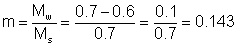
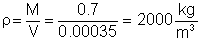
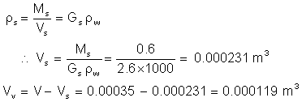
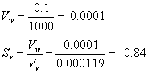
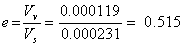
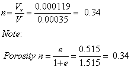
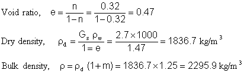
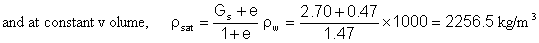
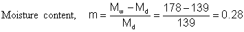

Example calculations
A soil sample has a weight of 0.7 kg and the volume was found to be3.5 × 10-4 m³ After drying out the weight was reduced to 0.6 kg. The particle specific gravity test gave 2.6.
Determine the following:
| (a) Moisture content | (d) Void ratio |
| (b) Dry density | (e) Porosity |
| (c) Bulk density | (f) Degree of saturation |
| (a) Moisture content Mass of water is 0.7 kg - 0.6 kg = 0.1 kg or in percentage 14.3% |
(b) Dry density |
(c) Bulk density  |
| To calculate the void ratio we must first
calculate the volume of solids. Then we can find the volume of voids
by subtracting the volume of solids from the total volume.
  |
||
| (d) Void ratio  |
(e) Porosity  |
(f) Degree of saturation  |
More example calculations
Example 1
A soil sample has a porosity of 41%, a moisture content of 15.2% and
a specific gravity of 2.65. Determine the degree of saturation and the air
void ratio.
We can't directly calculate the degree of saturation or the air void ratio.
First we need to find the void ratio because e is needed to find the answers.
The porosity is given, therefore we can find the void ratio.
(or 58%)
Air void ratio, Av = n (1-Sr) = 0.41 (1-0.58) = 0.1722 (or 17.2%)
(or 17.2%)
Example 2
Determine the dry and bulk density of a soil sample having a porosity
of 0.32 and a moisture content of 25% (Gs = 2.70)

Example 3
Determine the saturated bulk density of the soil in Example 2, assuming
no volume change.
If the soil is saturated then Sr = 1.0

Example 4
Determine the void ratio of a saturated soil sample that has a mass of
178 g before drying and 139 g after drying in an oven. Assume the specific
gravity of the soil solids to be 2.7.

For a saturated soil Sr = 1Void ratio, e = m × Gs = 0.28 × 2.7 = 0.756